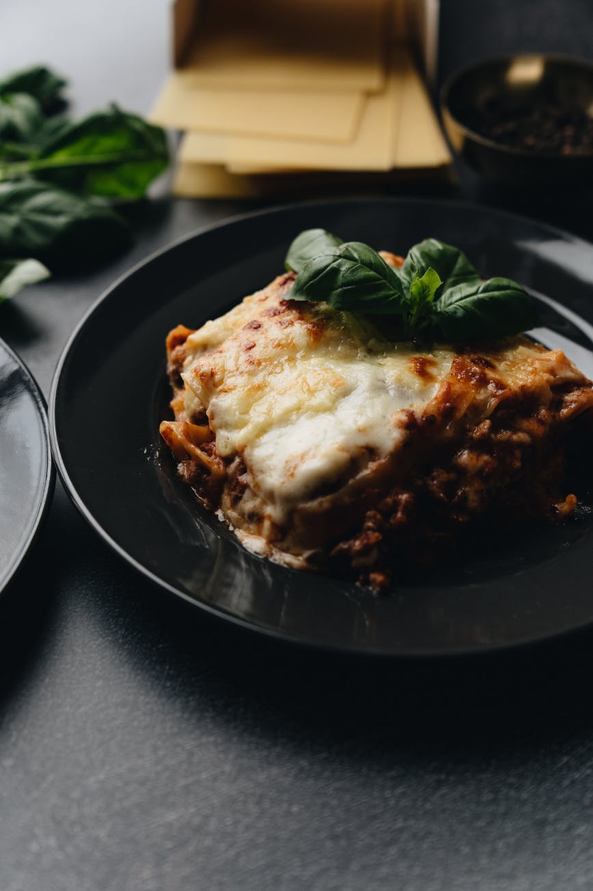

Brenda's Lasagna
Nutrition Facts
Per Serving: 643 calories; protein 41.3g; carbohydrates 53.4g; fat 29.3g; cholesterol 108.3mg; sodium 707.3mg
- 1(16ounce) package lasagna noodles
- 1 pound lean ground beef
- salt and pepper to taste
- 1 clove garlic, minced
- 1/2 pound shredded mozzarella cheese
- 1/2 pound shredded Cheddar cheese
- 1 pint ricotta cheese
Steps:
-
Bring a large pot of lightly salted water to a boil. Add pasta and cook for 8 to 10 minutes or until al dente; drain.
-
Preheat oven to 350 degrees F (175 degrees C). In a large skillet over medium-high heat, brown beef and season with salt and pepper; drain. Stir in spaghetti sauce and garlic and simmer 5 minutes.
-
In a medium bowl, combine mozzarella, Cheddar and ricotta; stir well. In 9x13 inch pan, alternate layers of noodles, meat mixture and cheese mixture until pan is filled.
-
Bake in preheated oven for 30 minutes, or until cheese is melted and bubbly.